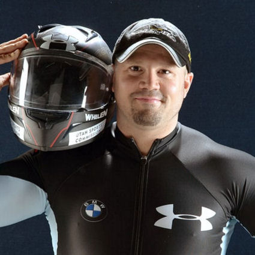
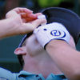

Знаменитости, пострадавшие от LASIK
Многие люди, которые ищут информацию о LASIK и других рефракционных операциях, считают, что, "выполнив свою домашнюю работу" и найдя "хорошего врача", можно избежать осложнений. Это просто неправда. Осложнения поражают богатых и бедных, известных и обычных людей, показывая, что даже там, где есть ресурсы для получения помощи от самых известных и престижных врачей в мире, LASIK по-прежнему работает неправильно. Если вы знаете знаменитость, у которой возникли проблемы после операции LASIK, напишите нам на электронный адрес lasikcomplications (at) yahoo.

Золотой призер Олимпийских игр в бобслее США Стивен Холкомб пострадал от эктазия роговицы после операции LASIK , что привело к его попытке самоубийства в 2007 году. Холкомб рассказал о своих проблемах со зрением, связанных с LASIK, в своей книге 2012 года, Но теперь Я вижу: Мой путь от Слепоты к олимпийскому золоту. Вот выдержка:
Я годами носил контактные линзы и очки и не обращал на это внимания... Местный офтальмолог пришел в Центр олимпийской подготовки США в Лейк-Плэсиде и предложил бесплатные процедуры Lasik... После быстрого отбора было решено, что я буду отличным кандидатом, и я воспользовался этим преимуществом... Это было год назад, и я не только не стал лучше видеть, но мое зрение продолжало ухудшаться.
Широко сообщалось, что у Холкомба был "кератоконус". Хирурги LASIK обычно ошибочно диагностируют эктазию роговицы после LASIK как "кератоконус", пытаясь скрыть связь с LASIK. Кератоконус - это происходящий естественным образом заболевание роговицы, которое обычно поражает оба глаза и обычно начинается в период полового созревания или позднего подросткового возраста .
Обновление: Холкомб был найден мертвым в возрасте 37 лет в своей комнате в Центре олимпийской подготовки США в Лейк-Плэсиде, штат Нью-Йорк, 6 мая 2017 года.
У Профессионального Футболиста Во время Матча Чемпионата Оторвался Ласик-Лоскут - CBS Sports 26.11.2016
Роман Харпер, защитник "Каролина Пантерз", на собственном горьком опыте убедился, что накладки Lasik не заживают. В матче чемпионата NFC его накладка Lasik была смещена.
Spice Girl, Мел Би, ослепла на один глаз из-за осложнений лазерной хирургии глаза, ей предстоит пересадка роговицы - 8/12/2014

Из статьи: Бывшая Spice Girl в новом интервью рассказала, что ослепла на один глаз, объяснив, что ранее перенесла лазерную операцию на глазу, которая прошла неудачно. Прочитать статью
Проблемы со зрением внесли Каспера Уэллса в список инвалидов - Philly.com 26.08.2013
Из статьи: Уэллс был внесен в список нетрудоспособных в понедельник утром из-за того, что "Филлис" назвали "проблемами со зрением", всего через два дня после того, как он стал проигравшим питчером и четырежды выбыл из строя в 18 иннингах. Временный менеджер Райн Сэндберг сказал, что Уэллс играл с ухудшенным зрением. "Филлис" отправили Уэллса к офтальмологу в Филадельфию. В ноябре прошлого года 28-летнему аутфилдеру была сделана операция по лазерной коррекции зрения, но проблемы не исчезли. Сандберг сказал, что Уэллс пробовал контактные линзы и очки, выписанные по рецепту. Ничего не помогало. "Он также испытывал сухость в глазах на поле", - сказал Сандберг. "Они пересыхают, когда он пытается моргнуть. Он пытается моргнуть, чтобы сосредоточиться. Он действительно с чем-то борется...
Операция LASIK привела к тому, что Джей Гиббонс из "Доджерс" был внесен в список инвалидов - NBC Sports, 29.03.2011
Из статьи: Гиббонс сказал Джексону, что новые [контактные] линзы улучшили его зрение за пределами поля, но не смогли улучшить его зрение за кадром, потому что у него "не было восприятия глубины". Он планировал посетить другого специалиста, но у него возникли проблемы с поиском линз это происходит из-за "выравнивания его роговицы, которое является нормальным результатом" операции, которую он перенес прошлой осенью в дополнение к процедуре lasik, проведенной в 2004 году.";
Джей Гиббонс покидает команду по зимнему футболу из-за ухудшения зрения - NBC Sports, 13.01.2011
Джей Гиббонс выступал за "Винтер болл" в Венесуэле, но был вынужден покинуть команду ранее на этой неделе из-за ухудшения зрения после ноябрьской операции на глазу, которая позволила улучшить его зрение с 20 по 25 ноября, сообщает Дилан Эрнандес из Los Angeles Times... Несколько лет назад он перенес лазерную операцию на глазу.
Джей Гиббонс из "Доджерс" сейчас плохо видит - latimes.com 14.03.2011
Джей Гиббонс изо всех сил старается не отрывать глаз от приза. Главный претендент на роль левого филдера "Доджерс", по крайней мере, на неполный рабочий день, Гиббонс пропускает весеннюю тренировку на два дня из-за неподходящих контактных линз...
У Гиббонса были проблемы со зрением. В 2004 году он перенес лазерную операцию на глазах, иногда носил солнцезащитные очки, выписанные по рецепту, а в октябре перенес хирургическую операцию по коррекции зрения. "Мы не можем найти подходящую пару стекол", - сказал он...
Карьера Доджера на кону после операции LASIK: sgvtribune.com 17.03.2011
Из статьи: Проблема с глазами возникла из-за неудачной пластики, которую [Джей] Гиббонс перенес в прошлом году после операции Lasik, проведенной в 2004 году, что вынудило его носить контактные линзы до тех пор, пока он не сможет пройти еще одну процедуру следующей зимой... В результате в течение следующих 10 дней или около того он должен доказать, что проблемы со зрением и попаданиями остались позади... Если зрение не улучшится, придется нелегко...
Олимпийский бобслеист страдает от эктазии после операции LASIK - CBS Sports, 17.02.2007
Из статьи: Но Холкомб знает о трудностях, ему пришлось преодолеть множество невзгод, чтобы достичь того, чего он достиг, в том числе бороться с дегенеративным заболеванием глаз. Болезнь, известная как кератоконус , был обнаружен только после того, как Холкомб перенес операцию Lasik около 2000 года, которая фактически усугубила его проблемы со зрением.
Тайгер Вудс, "Мое зрение начало ухудшаться" - USA Today, 15.05.2007
 Из статьи: В октябре 1999 года, после Кубка Райдера, он перенес операцию Lasik, выиграл Disney Classic в своем первом турнире после возвращения и с тех пор выступал довольно успешно. Этой весной он понял, что пришло время сделать это снова. "Мое зрение начало ухудшаться", - сказал Вудс после Players Championship. "У меня начались головные боли из-за того, что я постоянно щурился".; Ссылка на статью
Из статьи: В октябре 1999 года, после Кубка Райдера, он перенес операцию Lasik, выиграл Disney Classic в своем первом турнире после возвращения и с тех пор выступал довольно успешно. Этой весной он понял, что пришло время сделать это снова. "Мое зрение начало ухудшаться", - сказал Вудс после Players Championship. "У меня начались головные боли из-за того, что я постоянно щурился".; Ссылка на статью
Теннисистка Жюстин Энен страдает от ухудшения зрения после лазерной операции на глазу - ContactLenses.co.uk 5.02.2010
Семикратная победительница турниров большого шлема завершила карьеру 20 месяцев назад и во время перерыва перенесла лазерную операцию на обоих глазах. Затем она начала страдать от нечеткости зрения и обратилась за помощью.

Сообщается, что игрок в гольф Пэдрейг Харрингтон неоднократно подвергался лазерным операциям на глазах. Источник
29 марта 2009 года Харрингтон был замечен использующим глазные капли на турнире в Орландо, штат Флорида.
Спорт и LASIK - Вы можете быть удивлены, узнав, у кого были проблемы
Сообщается, что несколько профессиональных игроков в гольф испытали проблемы после LASIK, в том числе Кенни Перри , Ретиф Гусен , Кевин На , Пол Станковски , Ян Леггатт , Виджай Сингх , Джон Джейкобс , Питер Лонард , и Скотт Хох .
Игрок в гольф, Пэдрейг Харрингтон сообщается, что он неоднократно переносил лазерные операции на глазах.
Кэтчер "Атланта Брейвз", Брайан Макканн , внесен в список инвалидов из-за проблем со зрением после операции LASIK.
Брэндон Синг: "Потом я закончил операцию Lasik и немного пришел в себя, просто потому, что играл при ярком освещении и все такое, а мои глаза все еще были сухими". Источник
19.05.2009 Бейсболист колледжа Тревор Тир восстанавливается после операции LASIK "депрессивное состояние";: В декабре ему сделали операцию на глазу, и в течение трех месяцев ему приходилось ежедневно закапывать глазные капли, чтобы восстановить зрение. Он мог видеть, но недостаточно хорошо... Он обратился к окулисту, который порекомендовал операцию LASIK, но Тир все еще не был уверен. "У меня были сомнения", - сказал Тир. "Некоторые люди говорят, что вы видите ореолы вокруг автомобильных фар, и вероятность того, что это сработает, составляет всего 50 процентов. Но мой врач заверил меня, что, учитывая мой юный возраст, все не так плохо, как могло бы быть. "Я не мог ускорять вращение мяча", - сказал Тир. "Это было действительно удручающе".; Источник
7/1/2009: Несколько лет назад полузащитник "Кливленд Индианс", Джонни Перальта , на местных каналах транслировался рекламный ролик, восхваляющий его операцию LASIK в клинике Кливленда. Перальта был хорош до операции, но его поведение в эфире было неустойчивым. Радиопостановка стала предметом шуток некоторых циничных спортивных фанатов города, а его недавняя игра сделала его объектом презрения во всем городе. Источник
8/26/2009: Параджекас, главный специалист клиники Pleasant Valley CC в Саттоне, перенес успешную операцию Lasik по коррекции зрения в 1996 году, но последние полтора года он страдал от сухости глаз и помутнения зрения до такой степени, что это повлияло на его равновесие. "Мне показалось, что мои глаза заволокло туманом, как при размораживании лобового стекла", - сказал Параджекас. “Я продолжал моргать, моргать, моргать.” Параекасу вживили в глаза затычки, чтобы обеспечить увлажнение, но его глаза стали слишком влажными, поэтому пару недель назад ему удалили затычки. Он продолжает использовать капли, чтобы предотвратить сухость глаз. "Это был настоящий кошмар", - сказал он. Источник
Актриса, комедийная актриса Кэти Гриффин
От www.KathyGriffin.net:"Вот в чем дело. У меня были серьезные осложнения после операции lasik... Я перенес ПЯТЬ операций на правом глазу. Три операции были выполнены методом lasik, а одна была попыткой корректирующей операции..." Прочтите о "кошмаре Кэти Гриффин, вызванном лазером".
Профессиональный игрок в гольф Ретиф Гусен снимается с турнира - Qatar-Masters.com 23.11.2008
Из статьи: "Действующий чемпион был расстроен из-за ухудшения зрения после недавней корректирующей лазерной операции. Несмотря на срочный перелет на встречу со специалистом в Дубае, проблема сохранялась, в результате чего чемпион был отозван всего за 24 часа до начала турнира стоимостью 2,5 миллиона долларов. "Я уже проходила лазерное лечение семь лет назад и почувствовала, что мне нужно подкрасить кожу, что я и сделала десять дней назад. Но на левом глазу появилось небольшое новообразование в виде волокна". "
Адам Клейтон из U2 не садится за руль по ночам после операции LASIK
Из статьи: И хотя кажется, что осталось не так уж много интересного о The Edge, Адам Клейтон, Ларри Маллен-младший и особенно Боно, который лично занялся облегчением долгового бремени стран Третьего мира и встречался со всеми - от Джорджа Буша до Нельсона Манделы, Опры Уинфри и папы римского. - мы обнаружили 50 вещей, которые даже самые заядлые фанаты могут не знать о самой известной группе на планете... АДАМ КЛЕЙТОН, 44 года... Он не водит машину по ночам с тех пор, как перенес операцию Lasik ...
Оригинальный источник: New York Post
Каприати обеспокоен ночными матчами - SportingNews.com 9.08.2002
Из статьи: Дженнифер Каприати опасается участвовать в ночных матчах, потому что освещение корта влияет на ее способность видеть мяч... Каприати, перенесшая операцию на глазу Lasik два года назад, также испытала трудности с подбором мяча в ночном матче на Acura Classic на прошлой неделе, где она проиграла в четвертьфинале. "Я чувствую, что это немного проходит", - сказала она об операции.
Примечание редактора: Первоначально статья была опубликована по адресу http://www.sportingnews.com/tennis/articles/20020809/420549.html, но теперь удалена.
Профессиональный игрок в гольф Иэн Леггатт - Golf Digest, июнь 2002
"Канадец Иэн Леггатт, впервые выигравший PGA Tour в этом сезоне, также кое-что знает об осложнениях, связанных с Lasik. Леггатт, у которого до операции в октябре 2000 года была сильная близорукость на оба глаза, говорит, что прошло около недели после первой процедуры, прежде чем он снова стал нормально видеть. Но к Рождеству у него началась хроническая сухость в глазах и ухудшение зрения, поэтому он снова обратился к своему хирургу...